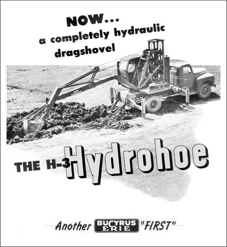
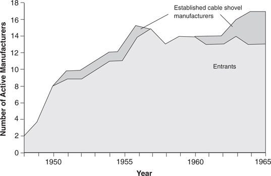

Just as Seagate Technology was one of the first firms to develop prototype 3.5-inch drives, Bucyrus Erie, the leading cable shovel maker, was keenly aware of the emergence of hydraulic excavating technology. By 1950 (about two years after the first backhoe appeared) Bucyrus purchased a fledgling hydraulic backhoe company, the Milwaukee Hydraulics Corporation. Bucyrus faced precisely the same problem in marketing its hydraulic backhoe as Seagate had faced with its 3.5-inch drives: Its most powerful mainstream customers had no use for it.
Bucyrus Erie’s response was a new product, introduced in 1951, called the “Hydrohoe.” Instead of using three hydraulic cylinders, it used only two, one to curl the shovel into the earth and one to “crowd” or draw the shovel toward the cab; it used a cable mechanism to lift the shovel. The Hydrohoe was thus a hybrid of the two technologies, reminiscent of the early transoceanic steamships outfitted with sails. 11 There is no evidence, however, that the Hydrohoe’s hybrid design resulted from Bucyrus engineers’ being “stuck” in some sort of cable-based engineering paradigm. Rather, the cable lift mechanism was the only viable way at that time, based on the state of hydraulics technology, to give the Hydrohoe the bucket capacity and reach that Bucyrus marketers thought they needed to appeal to their existing customers’ needs.
Figure 3.5 presents an excerpt from an early Hydrohoe product brochure. Note the differences from Sherman’s marketing approach: Bucyrus labeled the Hydrohoe a “dragshovel,” showed it in an open field, and claimed it could “get a heaping load on every pass”—all intended to appeal to general excavation contractors. Rather than commercialize the disruptive technology in the value network in which the current attributes of hydraulics were prized, Bucyrus tried to adapt the technology to fit its own value network. Despite this attempt, the Hydrohoe was still too limited in capacity and reach and did not sell well to Bucyrus’ customers. Bucyrus kept its Hydrohoe on the market for over a decade, attempting periodically to upgrade its performance to make it acceptable to its customers, but the machine was never commercially successful. Ultimately, the company returned to the cable shovels that its customers needed.
Figure 3.5 Hydrohoe Manufactured by Bucyrus Erie

Source: Brochure from Bucyrus Erie Company, South Milwaukee, Wisconsin, 1951.
Bucyrus Erie was the only maker of cable-actuated shovels known to have launched a hydraulic excavator between 1948 and 1961: All of the other manufacturers continued serving their established customers, well and prosperously. 12 In fact, the largest makers of cable-actuated excavators, Bucyrus Erie and Northwest Engineering, logged record profits until 1966—the point at which the disruptive hydraulics technology had squarely intersected with customers’ needs in the sewer and piping segment. This is typical of industries facing a disruptive technology: The leading firms in the established technology remain financially strong until the disruptive technology is, in fact, in the midst of their mainstream market.
Between 1947 and 1965, twenty-three companies entered the mechanical excavation market with hydraulic products. Figure 3.6, which measures the total number of active entrants and established firms offering hydraulic excavators (net of the companies that had exited), shows how completely the entrants dominated the hydraulic excavator market.
In the 1960s, some of the strongest cable shovel makers introduced shovels with hydraulics. Almost all of these models were hybrids, however, like Bucyrus Erie’s Hydrohoe, generally employing a hydraulic cylinder to articulate or curl the bucket and using cables to extend the bucket out and to lift the boom. When used in this way in the 1960s, hydraulics had a sustaining impact on the established manufacturers’ products, improving their performance in the mainstream value networks. Some of the methods that engineers found to use hydraulics on the cable excavators were truly ingenious. All of this innovative energy, however, was targeted at existing customers.
The strategies employed by the excavator manufacturers during this period highlight an important choice that confronts companies encountering disruptive technological change. In general, the successful entrants accepted the capabilities of hydraulics technology in the 1940s and 1950s as a given and cultivated new market applications in which the technology, as it existed, could create value. And as a general rule, the established firms saw the situation the other way around: They took the market’s needs as the given. They consequently sought to adapt or improve the technology in ways that would allow them to market the new technology to their existing customers as a sustaining improvement. The established firms steadfastly focused their innovative investments on their customers. Subsequent chapters will show that this strategic choice is present in most instances of disruptive innovation. Consistently, established firms attempt to push the technology into their established markets, while the successful entrants find a new market that values the technology.
Figure 3.6 Manufacturers of Hydraulic Excavators, 1948–1965

Source: Data are from the Historical Construction Equipment Association.
Hydraulics technology ultimately did progress to the point where it could address the needs of mainstream excavation contractors. That progress was achieved, however, by the entrant companies, who had first found a market for the initial capabilities of the technology, accumulated design and manufacturing experience in that market, and then used that commercial platform to attack the value networks above them. The established firms lost this contest. Only four cable excavator companies—Insley, Koehring, Little Giant, and Link Belt—remained as viable suppliers to excavation contractors by successfully but belatedly introducing lines of hydraulic excavators to defend their markets. 13
Aside from these, however, the other leading manufacturers of big cable machines in the mainstream excavation markets never introduced a commercially successful hydraulic excavator. Although some had employed hydraulics to a modest degree as a bucket-curling mechanism, they lacked the design expertise and volume-based manufacturing cost position to compete as hydraulics invaded the mainstream. By the early 1970s, all of these firms had been driven from the sewer, piping, and general excavation markets by the entrants, most of which had refined their technological capabilities initially in the small-contractor market. 14
This contrast in strategies for profiting from change characterizes the approaches employed by entrant and established firms in many of the other industries affected by disruptive technologies—particularly disk drives, steel, computers, and electric cars.